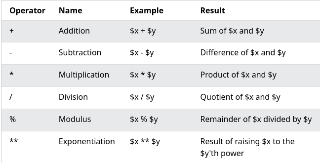
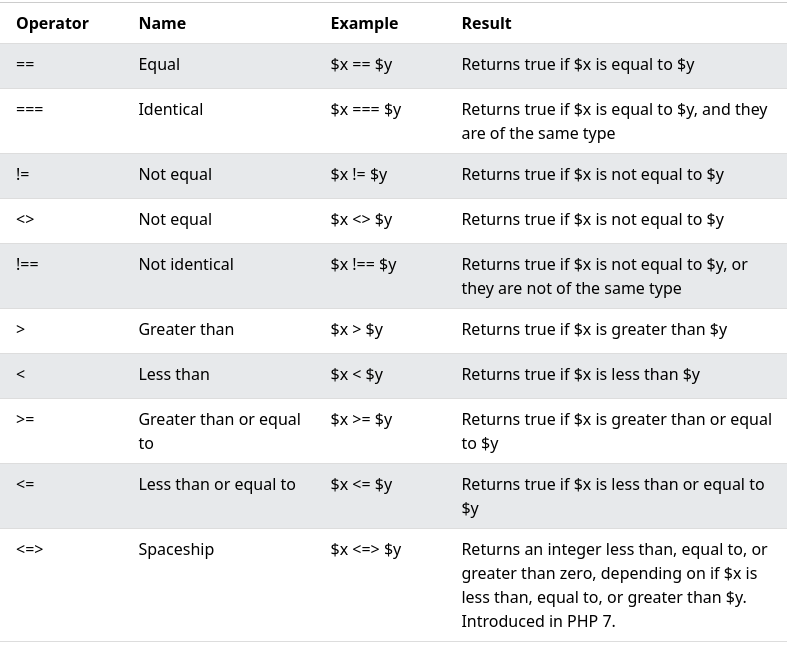
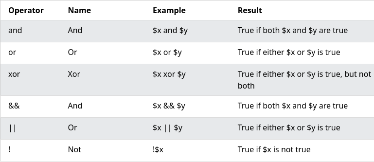
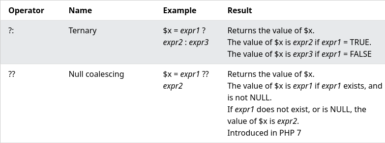

Unit V: Server Side Scripting Languages
PHP
PHP is a general-purpose scripting language geared toward web development. It was originally created by Danish-Canadian programmer Rasmus Lerdorf in 1994. The PHP reference implementation is now produced by The PHP Group.
Introduction to PHP
-
PHP started out as a small open source project that evolved as more and more people found out how useful it was. Rasmus Lerdorf unleashed the first version of PHP way back in 1994.
-
PHP is a MUST for students and working professionals to become a great Software Engineer specially when they are working in Web Development Domain. I will list down some of the key advantages of learning PHP:
- PHP is a recursive acronym for "PHP: Hypertext Preprocessor".
- PHP is a server side scripting language that is embedded in HTML. It is used to manage dynamic content, databases, session tracking, even build entire e-commerce sites.
- It is integrated with a number of popular databases, including MySQL, PostgreSQL, Oracle, Sybase, Informix, and Microsoft SQL Server.
- PHP is pleasingly zippy in its execution, especially when compiled as an Apache module on the Unix side. The MySQL server, once started, executes even very complex queries with huge result sets in record-setting time.
- PHP supports a large number of major protocols such as POP3, IMAP, and LDAP. PHP4 added support for Java and distributed object architectures (COM and CORBA), making n-tier development a possibility for the first time.
- PHP is forgiving: PHP language tries to be as forgiving as possible.
- PHP Syntax is C-Like.
Uses of PHP
- PHP performs system functions, i.e. from files on a system it can create, open, read, write, and close them.
- PHP can handle forms, i.e. gather data from files, save data to a file, through email you can send data, return data to the user.
- You add, delete, modify elements within your database through PHP.
- Access cookies variables and set cookies.
- Using PHP, you can restrict users to access some pages of your website.
- It can encrypt data.
General syntactic characteristics
-
Characteristics of PHP
- Simplicity
- Efficiency
- Security
- Flexibility
- Familiarity
-
Example(Hello World Program):
<html> <head> <title>Hello World</title> </head> <body> <?php echo "Hello, World!";?> </body> </html> -
Writing the PHP code inside is called Escaping to PH.
-
Canonical PHP Tags: The script starts with .
<?php # Here echo command is used to print echo "Hello, world!"; ?>Output:
Hello, world! -
SGML or Short HTML Tags: These are the shortest option to initialize a PHP code.
<? # Here echo command will only work if # setting is done as said before echo "Hello, world!"; ?>Output:
Hello, world! -
ASP Style Tags: To use this we need to set the configuration of the php.ini file. These are used by Active Server Pages to describe code blocks.
<% # Can only be written if setting is turned on # to allow % echo "hello world"; %>Output:
hello world -
Single line comments:
#<comment> -
Multiline comments:
/* <comment> */ -
PHP is case-sensitive
-
PHP is whitespace insensitive
-
In PHP, multiple statements can be executed simultaneously (under a single condition or loop) by using curly-braces {}
<?php $var = 50; if ($var>0){ echo ("Positive as \n"); echo ("greater than 0"); } ?>Output:
Positive as greater than 0
Primitives
-
PHP supports ten primitive types.
-
Four scalar types:
- bool
- int
- float (floating-point number, aka double)
- string
-
Four compound types:
- array
- object
- callable
- iterable
-
And finally two special types:
- resource
- NULL
Operations and Expressions
-
Operators are used to perform operations on variables and values.
-
PHP divides the operators in the following groups:
- Arithmetic operators
- Assignment operators
- Comparison operators
- Increment/Decrement operators
- Logical operators
- String operators
- Array operators
- Conditional assignment operators
-
Arithmetic operators: 
-
Assignment operators:

-
Comparison operators: 
-
Increment/Decrement operators:

-
Logical operators: 
-
String operators:

-
Array operators:

-
Conditional assignment operators: 
-
Almost everything in a PHP script is an expression. Anything that has a value is an expression. In a typical assignment statement ($x=100), a literal value, a function or operands processed by operators is an expression, anything that appears to the right of assignment operator (=)
-
Syntax:
$x=100; //100 is an expression $a=$b+$c; //b+$c is an expression $c=add($a,$b); //add($a,$b) is an expresson $val=sqrt(100); //sqrt(100) is an expression $var=$x!=$y; //$x!=$y is an expression
Output
-
echo&printare used to output data to the screen in PHP. -
echohas no return value whileprinthas a return value of 1 so it can be used in expressions. -
echocan take multiple parameters (although such usage is rare) whileprintcan take one argument. -
echois marginally faster thanprint -
Example:
<?php echo "<h2>PHP is Fun!</h2>"; echo "Hello world!<br>"; echo "I'm about to learn PHP!<br>"; echo "This ", "string ", "was ", "made ", "with multiple parameters."; print "<h2>PHP is Fun!</h2>"; print "Hello world!<br>"; print "I'm about to learn PHP!"; ?>
Control Statements
-
Control statements are conditional statements that execute a block of statements if the condition is correct. The statement inside the conditional block will not execute until the condition is satisfied.
-
The if-else statement:
if(expression1) { Only exceutes when the ic condition is correct. } elseif(expression2) { Executed when the if expression1 is false and the expression 2 is true. } else { Executed only when the both if block are false. } -
You can also use
ifalone -
? operator:
condition expresion ? true : false; -
switch statements:
<?php $day = date(" l "); switch($day) { case "monday": print($day); break; case "tuesday" print($day); break; case "wednesday": print($day); break; case "thursday": print($day); break; case "friday": print($day); break; case "saturday": print($day); break; default: print($day); }?> -
for loop:
<?php for($a = 1; $a < = 5; $a++) { print("value of a is $a<br>\n"); } ?>Output:
value of a is 1 value of a is 2 value of a is 3 value of a is 4 value of a is 5 -
while loop:
<?php while (TRUE) { print("While loop is executed"); } ?> -
do-while loop:
<?php $a=10; do { print($a<br>\n) a=a+a; } while (a < 50); ?> -
foreach statement:
foreach (array as key = > value) { statement }
Arrays
-
An array stores multiple values in one single variable:
-
In PHP
array()function is used to create arrays. -
Arrays in PHP are homogenous that means they are a collection of only one type of data.
<?php $cars = array("Volvo", "BMW", "Toyota"); echo "I like " . $cars[0] . ", " . $cars[1] . " and " . $cars[2] . "."; ?> -
An array is a special variable, which can hold more than one value at a time.
-
If you have a list of items (a list of car names, for example), storing the cars in single variables could look like this:
$cars1 = "Volvo"; $cars2 = "BMW"; $cars3 = "Toyota"; -
Get length of an array using
count():<?php $cars = array("Volvo", "BMW", "Toyota"); echo count($cars); ?>
Functions
-
PHP has more than 1000 built-in functions, and in addition you can create your own custom functions.
-
Syntax:
function functionName() { code to be executed; } -
Example:
<?php function writeMsg() { echo "Hello world!"; } writeMsg(); // call the function ?>
Pattern Matching
-
A regular expression is a sequence of characters that forms a search pattern. When you search for data in a text, you can use this search pattern to describe what you are searching for.
-
A regular expression can be a single character, or a more complicated pattern.
-
Regular expressions can be used to perform all types of text search and text replace operations.
-
Syntax:
-
In PHP, regular expressions are strings composed of delimiters, a pattern and optional modifiers.
$exp = "/w3schools/i"; -
In the example above,
/is the usual delimiter, w3schools is the pattern that is being searched for, and i is a modifier that makes the search case-insensitive. -
Regular Expression Functions in PHP:

Form Handling
-
The PHP superglobals
$_GETand$_POSTare used to collect form-data. -
Example Form:
<html> <body> <form action="welcome.php" method="post"> Name: <input type="text" name="name"><br> E-mail: <input type="text" name="email"><br> <input type="submit"> </form> </body> </html>
Files
-
PHP has several functions for creating, reading, uploading, and editing files.
-
PHP
readfile()Function -
The
readfile()function reads a file and writes it to the output buffer. -
The following code reads from a file and writes it's contents to the output buffer.
<?php echo readfile("webdictionary.txt"); ?>
Cookies
-
A cookie is often used to identify a user. A cookie is a small file that the server embeds on the user's computer. Each time the same computer requests a page with a browser, it will send the cookie too. With PHP, you can both create and retrieve cookie values.
-
A cookie is created with the
setcookie()function. -
Syntax:
setcookie(name, value, expire, path, domain, secure, httponly);Only the name parameter is required. All other parameters are optional.
-
In PHP we use:
isset()function to check if the cookie is set.setcookie()to create of modify a cookie.setcookie()to delete a cookie with an old expiration date.
Session tracking
-
A session is a way to store information (in variables) to be used across multiple pages.
-
Unlike a cookie, the information is not stored on the users computer.
-
When you work with an application, you open it, do some changes, and then you close it. This is much like a Session. The computer knows who you are. It knows when you start the application and when you end. But on the internet there is one problem: the web server does not know who you are or what you do, because the HTTP address doesn't maintain state.
-
Session variables solve this problem by storing user information to be used across multiple pages (e.g. username, favorite color, etc). By default, session variables last until the user closes the browser.
-
Session variables hold information about one single user, and are available to all pages in one application.
-
In PHP a session is started with the
session_start()function. -
Session variables are set with the PHP global variable:
$_SESSION
Using MySQL with PHP
-
PHP combined with MySQL are cross-platform (you can develop in Windows and serve on a Unix platform)
-
PHP 5 and later can work with a MySQL database using:
- MySQLi extension (the "i" stands for improved)
- PDO (PHP Data Objects)
WAP and WML
-
"Wireless Application Protocol (WAP) is a result of continuous work to define an industry wide standard for developing applications over wireless communication networks.
-
WML (Wireless Markup Language) is a markup language based on XML, and is intended for use in specifying content and user interface for narrowband devices, including cellular phones and pagers.
-
WML is designed with the constraints of small narrowband devices in mind. These constraints include:
- Small display and limited user input facilities
- Narrowband network connection
- Limited memory and computational resources.
-
WML includes four major functional areas:
- Text presentation and layout - WML includes text and image support, including a variety of formatting and layout commands
- Deck/card organisational metaphor - all information in WML is organised into a collection of cards and decks
- Inter-card navigation and linking - WML includes support for explicitly managing the navigation between cards and decks
- String parameterization and state management - all WML decks can be parameterised, using a state model."
-
The topmost layer in the WAP (Wireless Application Protocol) architecture is made up of WAE (Wireless Application Environment), which consists of WML and WML scripting language.
- WML stands for Wireless Markup Language
- WML is an application of XML, which is defined in a document-type definition.
- WML is based on HDML and is modified so that it can be compared with HTML.
- WML takes care of the small screen and the low bandwidth of transmission.
- WML is the markup language defined in the WAP specification.
- WAP sites are written in WML, while web sites are written in HTML.
- WML is very similar to HTML. Both of them use tags and are written in plain text format.
- WML files have the extension ".wml". The MIME type of WML is "text/vnd.wap.wml".
- WML supports client-side scripting. The scripting language supported is called WMLScript.
Introduction to ASP.NET
-
ASP.NET is a web development platform, which provides a programming model, a comprehensive software infrastructure and various services required to build up robust web applications for PC, as well as mobile devices.
-
ASP.NET works on top of the HTTP protocol, and uses the HTTP commands and policies to set a browser-to-server bilateral communication and cooperation.
-
ASP.NET is a part of Microsoft .Net platform. ASP.NET applications are compiled codes, written using the extensible and reusable components or objects present in .Net framework. These codes can use the entire hierarchy of classes in .Net framework.
-
The ASP.NET application codes can be written in any of the following languages:
- C#
- Visual Basic.Net
- Jscript
- J#
Overview of the .NET Framework
-
.NET is a developer platform made up of tools, programming languages, and libraries for building many different types of applications.
-
There are various implementations of .NET. Each implementation allows .NET code to execute in different places—Linux, macOS, Windows, iOS, Android, and many more.
- .NET Framework is the original implementation of .NET. It supports running websites, services, desktop apps, and more on Windows. 1.NET is a cross-platform implementation for running websites, services, and console apps on Windows, Linux, and macOS. .NET is open source on GitHub. .NET was previously called .NET Core.
- Xamarin/Mono is a .NET implementation for running apps on all the major mobile operating systems, including iOS and Android.
-
.NET Standard is a formal specification of the APIs that are common across .NET implementations. This allows the same code and libraries to run on different implementations.
Overview of C#
-
C# is a modern, general-purpose, object-oriented programming language developed by Microsoft and approved by European Computer Manufacturers Association (ECMA) and International Standards Organization (ISO).
-
C# was developed by Anders Hejlsberg and his team during the development of .Net Framework.
-
C# is designed for Common Language Infrastructure (CLI), which consists of the executable code and runtime environment that allows use of various high-level languages on different computer platforms and architectures.
-
The following reasons make C# a widely used professional language −
- It is a modern, general-purpose programming language
- It is object oriented.
- It is component oriented.
- It is easy to learn.
- It is a structured language.
- It produces efficient programs.
- It can be compiled on a variety of computer platforms.
- It is a part of .Net Framework.
ASP.NET Controls
-
The ASP.NET page framework includes a number of built-in server controls that are designed to provide a more structured programming model for the Web. These controls provide the following features:
- Automatic state management.
- Simple access to object values without having to use the Request object.
- Ability to react to events in server-side code to create applications that are better structured.
- Common approach to building user interfaces for web pages.
- Output is automatically customized based on the capabilities of the browser.
-
In addition to the built-in controls, the ASP.NET page framework also provides the ability to create user controls and custom controls. User controls and custom controls can enhance and extend existing controls to build a much richer user interface.
Web Services
-
A web service is a web-based functionality accessed using the protocols of the web to be used by the web applications. There are three aspects of web service development:
- Creating the web service
- Creating a proxy
- Consuming the web service
Overview of Node JS
-
Node.js is an open-source and cross-platform JavaScript runtime environment. It is a popular tool for almost any kind of project!
-
Node.js runs the V8 JavaScript engine, the core of Google Chrome, outside of the browser. This allows Node.js to be very performant.
-
A Node.js app runs in a single process, without creating a new thread for every request. Node.js provides a set of asynchronous I/O primitives in its standard library that prevent JavaScript code from blocking and generally, libraries in Node.js are written using non-blocking paradigms, making blocking behavior the exception rather than the norm.
-
When Node.js performs an I/O operation, like reading from the network, accessing a database or the filesystem, instead of blocking the thread and wasting CPU cycles waiting, Node.js will resume the operations when the response comes back.